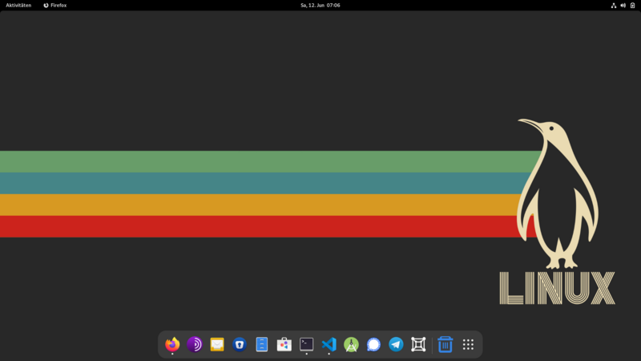
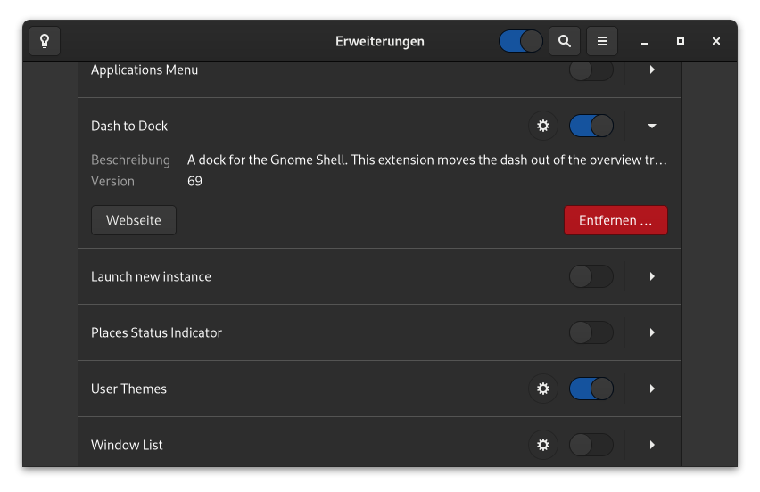

Die beliebte GNOME Shell Erweiterung Dash to Dock funktioniert bekanntlicher Weise noch nicht auf GNOME 40. Folgend möchte ich euch zeigen, wie ihr die Erweiterung trotzdem schon auf GNOME 40 nutzen könnt.
Hinweis: In dieser Anleitung wird Dash to Dock aus eine Quelle kompiliert, die noch nicht stabil ist.

Seit einigen Monaten arbeitet der Entwickler Evan Welsh an der Portierung der Erweiterung auf GNOME 40. Im Pull Request #1402 wird auch schon seit Ende März 2021 rege diskutiert und Bugs gemeldet. Ich persönlich nutzte die Erweiterung schon seit anfangs April ohne Probleme, allerdings auch nur mit den Standradeinstellungen.
Um das Stylesheet zu kompilieren, benötigen man eine Implementierung von SASS. Dash to Dock unterstützt dart-sass (sass), sassc, und ruby-sass. Jede Distribution sollte mindestens eine dieser Implementierungen haben. Der Entwickler empfiehlt die Verwendung von dart-sass (sass) oder sassc gegenüber ruby-sass, da ruby-sass veraltet sei.
sudo dnf install sasscStandardmässig versucht Dash to Dock, mit dart-sass zu bauen. Falls man nicht dart-sass verwendet, muss man die SASS-Umgebungsvariable anpassen.
export SASS=sassc
# oder...
export SASS=rubyNun kann man die Quelle klonen und mit der beiliegenden make Datei kompilieren und installieren.
git clone https://github.com/ewlsh/dash-to-dock.git
cd dash-to-dock/
git checkout -b ewlsh/gnome-40
make
make installNach dem Installieren muss man sich von der aktuellen Sitzung abmelden und wieder anmelden. Nach dem Anmelden kann Dash to Dock in der Applikation Erweiterung aktiviert, konfiguriert oder wieder entfernt werden.
